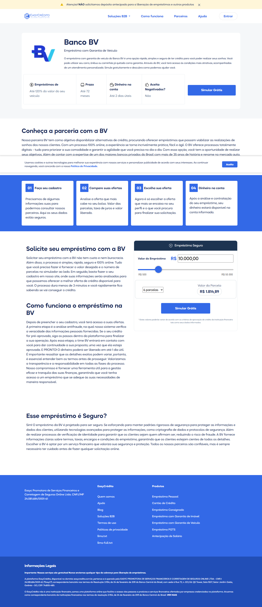

C715bb5625e — easycredito.com.br
https://easycredito.com.br/parceiros/bv
Prioridade: MEDIUM · Cenário: B_AMBIGUOUS_COMMUNICATION · Revisão humana: PENDING
1. Decisão Consolidada
Justificativa
Trata-se de uma landing page dedicada da promotora/correspondente bancário EasyCrédito (CNPJ 24.081.684/0001-61) ofertando Empréstimo com Garantia de Veículo do Banco BV. Embora a empresa identifique seu CNPJ e sua condição de correspondente bancário no rodapé, a página utiliza o logotipo do Banco BV em destaque acima da dobra, traz a marca no título ('Empréstimo Pessoal Online Banco BV | EasyCrédito'), disponibiliza simulador próprio sem aviso imediato de correspondente na área de captura, referencia norma revogada (Res. 3.954/2011 em vez da Res. CMN 4.935/2021) e omite os canais de ouvidoria do banco contratante. Configura-se comunicação ambígua por potencial COBAN, demandando revisão humana (REVIEW_REQUIRED / prioridade MEDIUM). [Revisor: CONFIRM] A página pertence a uma promotora de crédito e correspondente bancário (EasyCrédito - EASYC PROMOTORA DE SERVIÇOS FINANCEIROS E CORRETAGEM DE SEGUROS ONLINE LTDA, CNPJ 24.081.684/0001-61) e promove uma landing page dedicada a 'Empréstimo com Garantia de Veículo' do Banco BV (E-TITLE, E-FOLD), exibindo o logotipo do Banco BV em destaque acima da dobra (E-IMG-2, E-SHOT-VIEWPORT) e disponibilizando um simulador próprio (E-SHOT-FULL, E-TXT-009). Embora identifique sua razão social, CNPJ e condição de correspondente no rodapé (E-FTR, E-TXT-016), faz referência à norma revogada (Resolução nº 3.954/2011 em vez da Resolução CMN nº 4.935/2021) e omite os dados de ouvidoria da instituição financeira contratante. Portanto, confirma-se a classificação REVIEW_REQUIRED com prioridade MEDIUM.
Limitações
- apenas a URL descoberta foi inspecionada; páginas internas, formulários e fluxos após cliques não foram acessados
- nenhum cadastro autorizado de correspondentes carregado; CONFIRMED_COBAN indisponível nesta execução
- requisitos contratuais/internos não fornecidos: mapeamento limitado ao texto normativo
2. Screenshots


3. Catálogo de Evidências (Dados Brutos Observados)
| Ref | Tipo | Local | Conteúdo |
|---|---|---|---|
| E-URL | domain | url | URL final: https://easycredito.com.br/parceiros/bv (domínio: easycredito.com.br) |
| E-DISC-001 | text | search_index | Índice de busca (grounding): easycredito.com.br — **Estabelecimento / Perfil:** EasyCrédito (`EASYC PROMOTORA DE SERVIÇOS FINANCEIROS E CORRETAGEM DE SEGUROS ONLINE LTDA`) | **URL:** `https://www.easycredito.com.br/parceiros/banco-bv` (domínio `easycredito.com.br`) | **Uso da Marca e Produtos:** Possui uma landing page exclusiva com o título em destaque *"Empréstimo Pessoal Online Banco BV | EasyCrédito"*, ofertando empréstimo com garantia de veículo (refinanciamento de até 120% do valor do veículo em até 72x) através de um simulador próprio integrado | Informa claramente no rodapé a razão social (`EASYC PROMOTORA DE SERVIÇOS FINANCEIROS E CORRETAGEM DE SEGUROS ONLINE LTDA`), o CNPJ (`24.081.684/0001-61`), endereço e a condição de correspondente bancário, porém faz referência à antiga Resolução nº 3.954/2011 do BCB (já revogada e substituída pela Resolução CMN nº 4.935/2021) |
| E-SHOT-VIEWPORT | screenshot | viewport | evidence\C715bb5625e\attempt-1\viewport.png (sha256 3b63934984b2760e…) |
| E-SHOT-FULL | screenshot | page | evidence\C715bb5625e\attempt-1\fullpage.png (sha256 2e07237b58471c41…) |
| E-TITLE | title | head | Empréstimo Pessoal Online Banco BV | EasyCrédito |
| E-META-1 | meta | head | description: Faça a simulação online e encontre o empréstimo perfeito para você, seja ele empréstimo pessoal, consignado ou empréstimo com garantia, sem burocracia! |
| E-META-2 | meta | head | og:title: Empréstimo Pessoal Online Banco BV | EasyCrédito |
| E-META-3 | meta | head | og:description: Faça a simulação online e encontre o empréstimo perfeito para você, seja ele empréstimo pessoal, consignado ou empréstimo com garantia, sem burocracia! |
| E-CANONICAL | meta | head | https://easycredito.com.br/ |
| E-HEAD-1 | heading | page | Banco BV |
| E-HEAD-2 | heading | page | Conheça a parceria com a BV |
| E-HEAD-3 | heading | page | Solicite seu empréstimo com a BV |
| E-HEAD-4 | heading | page | Como funciona o empréstimo na BV |
| E-HEAD-5 | heading | page | Empréstimo Seguro |
| E-HEAD-6 | heading | page | Esse empréstimo é Seguro? |
| E-HDR | text | header | Soluções B2B Como funciona Parceiros Ajuda Entrar |
| E-FOLD | text | viewport (acima da dobra) | Atenção! NÃO solicitamos depósito antecipado para a liberação de empréstimos e outros produtos Soluções B2B Como funciona Parceiros Ajuda Entrar Banco BV Empréstimo com Garantia de Veículo O empréstimo com garantia de veículo do Banco BV é uma opção rápida, simples e segura de ter crédito para você poder realizar seus sonhos. Você pode utilizar seu carro, ônibus ou caminhão já quitado como garantia. Através do BV, você terá acesso às condições mais atrativas, acompanhadas de um atendimento personalizado. Simule gratuitamente e descubra como podemos ajudar você. Empréstimos de Até 120% do valor do seu veículo Prazo Até 72 meses Dinheiro na conta Até 2 dias úteis Aceita Negativados? Não Simular Grátis Conheça a parceria com a BV Nossa parceira BV tem como objetivo disponibilizar alternativas de crédito, procurando oferecer empréstimos que possam viabilizar as realizações de sonhos dos nossos clientes. Com um processo 100% online, a experiência se torna incrivelmente prática, fácil e ágil. O BV oferece processos totalmente digitais - tudo para priorizar a sua comodidade e garantir a agilidade que você precisa no dia a dia. Com essa opção, você tem a oportunidade de realizar seus objetivos. Além de contar com a expertise de um dos maiores bancos privados do Brasil com mais de 35 anos de história e renome no mercado auto. Nossa parceria visa ajudar nossos clientes quando eles mais precisam. A colaboração BV é a aliança que redefine o negócio financeiro, com um foco incansável no cliente e na excelência. Usamos cookies e outras tecnologias para melhorar sua experiência com nossos serviços e personalizar publicidade de acordo com seus interesses. Ao continuar navegando, você concorda com a nossa Política de Privacidade. Aceito |
| E-FTR | text | footer | Easyc Promotora de Serviços Financeiros e Corretagem de Seguros Online Ltda. CNPJ/MF 24.081.684/0001-61 EasyCrédito Quem somos Ajuda Blog Soluções B2B Termos de uso Políticas de privacidade llms.txt llms-full.txt Produtos Empréstimo Pessoal Cartão de Crédito Empréstimo Consignado Empréstimo com Garantia de Imóvel Empréstimo com Garantia de Veículo Empréstimo FGTS Antecipação de Salário | Informações Legais Importante: Nossos serviços são gratuitos! Nunca enviamos qualquer tipo de cobrança para liberação de empréstimos. A plataforma EasyCrédito, disponível no domínio easycredito.com.br, pertence e é operada pela EASYC PROMOTORA DE SERVIÇOS FINANCEIROS E CORRETAGEM DE SEGUROS ONLINE LTDA - CNPJ: 24.081.684/0001-61, ("EasyC"), correspondente bancário nos termos da Resolução 3.954, de 24 de fevereiro de 2011 do Banco Central do Brasil, com sede à Rua 72, n. 223, Ed. QS Tower, Sala 1507, Setor Jardim Goiás, Goiânia - GO, CEP: 74.805-480. O EasyCrédito não é uma instituição financeira, somos uma plataforma online que facilita o acesso das pessoas a produtos e serviços financeiros ofertados por empresas credenciadas na plataforma. Atuamos como correspondente bancário de instituições financeiras nos termos da resolução 3.954, de 24 de fevereiro de 2011 do Banco Central do Brasil. VER MAIS |
| E-NAV | nav | header | <https://easycredito.com.br/> | Como funciona <https://easycredito.com.br/#how-it-works> | Parceiros <https://easycredito.com.br/#parceiros> | Ajuda <https://easyc.zendesk.com/> | Entrar <https://easycredito.com.br/entrar> |
| E-CTA-1 | cta | page | Fechar alerta |
| E-CTA-2 | cta | header | Soluções B2B |
| E-CTA-3 | cta | header | Entrar <https://easycredito.com.br/entrar> |
| E-CTA-4 | cta | page | Simular Grátis <https://easycredito.com.br/propostas> |
| E-CTA-5 | cta | page | Simular Grátis |
| E-CTA-6 | cta | page | Aceito |
| E-IMG-1 | image | header (acima da dobra) | imagem alt='Logo EasyCrédito' src=https://cdn2.easycredito.com.br/assets/main/logo-easycredito-6047341476fccf58a054d87a48cf1b8ab0f88b36b9af01dc0f54583ec18c93a7.png (130x32, acima da dobra) |
| E-IMG-2 | image | page (acima da dobra) | imagem alt='' src=https://cdn2.easycredito.com.br/assets/main/partners/lp_lenders_logos/bv-ccee0715c0b6d8e94c68b2fc3b095c4d0dcee29ec3bb7eb3841f65a29efcf9b5.png (152x108, acima da dobra) |
| E-IMG-3 | image | footer | imagem alt='logo EasyCrédito' src=https://cdn2.easycredito.com.br/assets/main/blank-ef1955ae757c8b966c83248350331bd3a30f658ced11f387f8ebf05ab3368629.gif (1x1, abaixo da dobra) |
| E-TXT-001 | text | page | Parceiros |
| E-TXT-002 | text | page | Banco BV |
| E-TXT-003 | text | page | O empréstimo com garantia de veículo do Banco BV é uma opção rápida, simples e segura de ter crédito para você poder realizar seus sonhos. Você pode utilizar seu carro, ônibus ou caminhão já quitado como garantia. Através do BV, você terá acesso às condições mais atrativas, acompanhadas de um atendimento personalizado. Simule gratuitamente e descubra como podemos ajudar você. |
| E-TXT-004 | text | page | Conheça a parceria com a BV |
| E-TXT-005 | text | page | Nossa parceira BV tem como objetivo disponibilizar alternativas de crédito, procurando oferecer empréstimos que possam viabilizar as realizações de sonhos dos nossos clientes. Com um processo 100% online, a experiência se torna incrivelmente prática, fácil e ágil. O BV oferece processos totalmente digitais - tudo para priorizar a sua comodidade e garantir a agilidade que você precisa no dia a |
| E-TXT-006 | text | page | dia. Com essa opção, você tem a oportunidade de realizar seus objetivos. Além de contar com a expertise de um dos maiores bancos privados do Brasil com mais de 35 anos de história e renome no mercado auto. Nossa parceria visa ajudar nossos clientes quando eles mais precisam. A colaboração BV é a aliança que redefine o negócio financeiro, com um foco incansável no cliente e na excelência. |
| E-TXT-007 | text | page | Precisamos de algumas informações suas para podermos consultar nossos parceiros. Aqui os seus dados estão seguros. |
| E-TXT-008 | text | page | Solicite seu empréstimo com a BV |
| E-TXT-009 | text | page | Solicitar seu empréstimo com a BV não tem custo e nem burocracia. Além disso, o processo é simples, rápido, seguro e 100% online. Tudo que você precisa fazer é fornecer o valor desejado e o número de parcelas no simulador ao lado. Em seguida, basta fazer o seu cadastro em nosso site, onde suas informações serão analisadas para que possamos oferecer a melhor oferta de crédito disponível para você. |
| E-TXT-010 | text | page | Como funciona o empréstimo na BV |
| E-TXT-011 | text | page | Depois de preencher o seu cadastro, você terá acesso a suas ofertas. A primeira etapa é a análise antifraude, na qual nosso sistema verifica a veracidade das informações pessoais fornecidas. Se o seu crédito for pré-aprovado, siga os passos dentro da plataforma para finalizar a sua operação. Após essa etapa, o time BV entrará em contato com você para dar continuidade a sua proposta, uma vez que |
| E-TXT-012 | text | page | * Estes valores poderão variar de acordo com os critérios de aprovação de crédito da instituição financeira tais como seus dados informados. |
| E-TXT-013 | text | page | Sim! O empréstimo da BV é projetado para ser seguro. Se esforçando para manter padrões rigorosos de segurança para proteger as informações e dados dos clientes, utilizando tecnologias avançadas para proteger as informações, como criptografia de dados e protocolos de segurança. Além de realizar processos de verificação de identidade para garantir que os clientes sejam quem afirmam ser, reduzindo o |
| E-TXT-014 | text | page | risco de fraude. A BV fornece informações claras sobre termos, taxas, encargos e condições do empréstimo, garantindo que os clientes estejam cientes de todos os detalhes. Escolher a BV é optar por um serviço financeiro que valoriza sua segurança e proteção. Todos os nossos parceiros são confiáveis, mas é sempre necessário ter cuidado antes de fazer qualquer solicitação online. |
| E-TXT-015 | text | page | Easyc Promotora de Serviços Financeiros e Corretagem de Seguros Online Ltda. CNPJ/MF 24.081.684/0001-61 |
| E-TXT-016 | text | page | A plataforma EasyCrédito, disponível no domínio easycredito.com.br, pertence e é operada pela EASYC PROMOTORA DE SERVIÇOS FINANCEIROS E CORRETAGEM DE SEGUROS ONLINE LTDA - CNPJ: 24.081.684/0001-61, ("EasyC"), correspondente bancário nos termos da Resolução 3.954, de 24 de fevereiro de 2011 do Banco Central do Brasil, com sede à Rua 72, n. 223, Ed. QS Tower, Sala 1507, Setor Jardim Goiás, Goiânia |
| E-TXT-017 | text | page | - GO, CEP: 74.805-480. |
| E-TXT-018 | text | page | O EasyCrédito não é uma instituição financeira, somos uma plataforma online que facilita o acesso das pessoas a produtos e serviços financeiros ofertados por empresas credenciadas na plataforma. Atuamos como correspondente bancário de instituições financeiras nos termos da resolução 3.954, de 24 de fevereiro de 2011 do Banco Central do Brasil. VER MAIS |
4. Análise de Marca (gemini-4-argon, brand-analyst/v5)
Dimensões Avaliadas
| Dimensão | Sinal | Achado | Refs |
|---|---|---|---|
| VISUAL_IDENTITY | LEGITIMATE | A página mantém o cabeçalho e o layout próprios da plataforma EasyCrédito, mas dedica o bloco principal ao Banco BV. | E-IMG-1 E-SHOT-VIEWPORT |
| DECLARED_COMMERCIAL_IDENTITY | LEGITIMATE | O estabelecimento identifica sua razão social (EASYC PROMOTORA DE SERVIÇOS FINANCEIROS E CORRETAGEM DE SEGUROS ONLINE LTDA) e CNPJ (24.081.684/0001-61) no rodapé. | E-FTR E-TXT-015 E-TXT-016 |
| CORRESPONDENT_TRANSPARENCY | CONFUSION | Embora informe atuar como correspondente bancário no rodapé, faz menção à antiga Resolução 3.954/2011 (revogada pela Res. CMN 4.935/2021), não exibe aviso de correspondente na dobra inicial nem junto ao simulador e omite os canais de SAC/Ouvidoria do Banco BV. | E-FTR E-TXT-016 E-TXT-018 E-SHOT-VIEWPORT |
| INSTITUTIONAL_LANGUAGE | LEGITIMATE | A linguagem refere-se ao Banco BV em terceira pessoa como instituição parceira ('Conheça a parceria com a BV', 'Nossa parceira BV'). | E-HEAD-2 E-TXT-005 |
| LOGO_USAGE | CONFUSION | Exibe o logotipo oficial do Banco BV em destaque no topo da página para promover a contratação de Empréstimo com Garantia de Veículo. | E-IMG-2 E-SHOT-VIEWPORT |
| SERVICE_JOURNEY | CONFUSION | Apresenta página exclusiva ('/parceiros/bv') com título 'Empréstimo Pessoal Online Banco BV | EasyCrédito' e simulador integrado convidando o usuário a solicitar empréstimo com a BV. | E-URL E-TITLE E-HEAD-3 E-TXT-009 E-SHOT-FULL |
| CONTACT_CHANNELS | CONFUSION | Não informa os canais de atendimento e Ouvidoria da instituição financeira contratante (Banco BV) na página. | E-FTR E-SHOT-FULL |
| CONSUMER_CONFUSION | CONFUSION | O destaque dado à marca e logotipo do Banco BV acima da dobra, somado ao título de busca e simulador dedicado sem aviso imediato de correspondente bancário, requer revisão de conformidade à luz da Res. CMN 4.935/2021. | E-TITLE E-IMG-2 E-SHOT-VIEWPORT |
Indícios de Confusão
- [HIGH] LOGO_USAGE: Uso em destaque do logotipo do Banco BV acima da dobra na landing page dedicada de captação de empréstimo (vedado pelo art. 14, II da Resolução CMN nº 4.935/2021 para correspondentes em páginas próprias sem clara distinção normativa). — E-IMG-2 E-SHOT-VIEWPORT
- [MEDIUM] CORRESPONDENT_TRANSPARENCY: A declaração de correspondente bancário aparece apenas no rodapé, cita norma revogada (Resolução nº 3.954/2011 em vez da Resolução CMN nº 4.935/2021) e não disponibiliza os telefones de atendimento e ouvidoria da instituição contratante (Banco BV). — E-FTR E-TXT-016 E-TXT-018 E-SHOT-FULL
- [MEDIUM] SERVICE_JOURNEY: Oferta de simulador interativo de empréstimo ('Solicite seu empréstimo com a BV') diretamente associado à marca do banco sem aviso visível de correspondente junto ao formulário/simulador. — E-HEAD-3 E-TXT-009 E-CTA-4 E-SHOT-FULL
Indícios de Relação Legítima
- [HIGH] DECLARED_COMMERCIAL_IDENTITY: Identificação da razão social (EASYC PROMOTORA DE SERVIÇOS FINANCEIROS E CORRETAGEM DE SEGUROS ONLINE LTDA) e CNPJ (24.081.684/0001-61) no rodapé, além de declaração expressa de que não é instituição financeira. — E-FTR E-TXT-015 E-TXT-016 E-TXT-018
- [MEDIUM] INSTITUTIONAL_LANGUAGE: Uso de linguagem em terceira pessoa tratando o Banco BV como parceiro comercial da plataforma EasyCrédito. — E-HEAD-2 E-TXT-005
Fatos Observados
- A página https://easycredito.com.br/parceiros/bv pertence à promotora de crédito EasyCrédito (EASYC PROMOTORA DE SERVIÇOS FINANCEIROS E CORRETAGEM DE SEGUROS ONLINE LTDA, CNPJ 24.081.684/0001-61).
- O título da página é 'Empréstimo Pessoal Online Banco BV | EasyCrédito' e a área visível inicial exibe o logotipo do Banco BV em destaque ao lado da oferta de Empréstimo com Garantia de Veículo.
- Há um simulador próprio na página sob a chamada 'Solicite seu empréstimo com a BV'.
- No rodapé, a empresa declara atuar como correspondente bancário, mas cita a Resolução 3.954/2011 (já revogada pela Resolução CMN nº 4.935/2021) e não exibe números de SAC ou Ouvidoria do Banco BV.
Incertezas
- Verificação em cadastro interno se a EASYC PROMOTORA DE SERVIÇOS FINANCEIROS E CORRETAGEM DE SEGUROS ONLINE LTDA (CNPJ 24.081.684/0001-61) possui contrato ativo de correspondente bancário ou parceria autorizada para uso da marca Banco BV.
Síntese do Analista
Trata-se de uma landing page dedicada da promotora/correspondente bancário EasyCrédito (CNPJ 24.081.684/0001-61) ofertando Empréstimo com Garantia de Veículo do Banco BV. Embora a empresa identifique seu CNPJ e sua condição de correspondente bancário no rodapé, a página utiliza o logotipo do Banco BV em destaque acima da dobra, traz a marca no título ('Empréstimo Pessoal Online Banco BV | EasyCrédito'), disponibiliza simulador próprio sem aviso imediato de correspondente na área de captura, referencia norma revogada (Res. 3.954/2011 em vez da Res. CMN 4.935/2021) e omite os canais de ouvidoria do banco contratante. Configura-se comunicação ambígua por potencial COBAN, demandando revisão humana (REVIEW_REQUIRED / prioridade MEDIUM).
5. Identidade do Responsável
cnpj:24081684000161
A página declara atuação como correspondente/prestador e identifica a empresa, mas não houve confirmação em cadastro autorizado.
Fatos Observados
| Tipo | Valor | Ref | Contexto |
|---|---|---|---|
| domain | easycredito.com.br | E-URL | |
| cnpj | 24.081.684/0001-61 | E-DISC-001 | ente no rodapé a razão social (`EASYC PROMOTORA DE SERVIÇOS FINANCEIROS E CORRETAGEM DE SEGUROS ONLINE LTDA`), o CNPJ (`24.081.684/0001-61 |
| legal_name | DE SERVIÇOS FINANCEIROS E CORRETAGEM DE SEGUROS ONLINE LTDA | E-DISC-001 | |
| legal_name | Easyc Promotora de Serviços Financeiros e Corretagem de Seguros Online Ltda | E-FTR | |
| correspondent_declaration | correspondente bancário | E-FTR | Easyc Promotora de Serviços Financeiros e Corretagem de Seguros Online Ltda. CNPJ/MF 24.081.684/0001-61 EasyCrédito Quem somos Ajuda Blog Soluções B2B Termos de uso Políticas de privacidade llms.txt l |
| correspondent_declaration | não é uma instituição financeira | E-FTR | Easyc Promotora de Serviços Financeiros e Corretagem de Seguros Online Ltda. CNPJ/MF 24.081.684/0001-61 EasyCrédito Quem somos Ajuda Blog Soluções B2B Termos de uso Políticas de privacidade llms.txt l |
| correspondent_declaration | Atuamos como correspondente | E-FTR | Easyc Promotora de Serviços Financeiros e Corretagem de Seguros Online Ltda. CNPJ/MF 24.081.684/0001-61 EasyCrédito Quem somos Ajuda Blog Soluções B2B Termos de uso Políticas de privacidade llms.txt l |
| partnership_declaration | parceiros | E-DISC-001 | **URL:** `https://www.easycredito.com.br/parceiros/banco-bv` (domínio `easycredito.com.br`) |
| partnership_declaration | parceria | E-HEAD-2 | Conheça a parceria com a BV |
| partnership_declaration | parceira | E-FOLD | Não Simular Grátis Conheça a parceria com a BV Nossa parceira BV tem como objetivo disponibilizar alternativas de crédito, procurando oferecer empréstimos que possam viabilizar as realizações de sonho |
Inferências de Associação (Não são Fatos)
- base da associação: cnpj publicado na página
6. Mapeamento de Conformidade (Hipóteses)
Mapeamento indicativo para apoio à auditoria. Não constitui conclusão regulatória; a decisão definitiva pertence à auditoria.
Res. CMN 4.935/2021, art. 14, inciso II — HYPOTHESIS_CONDITIONAL_ON_LINK
Fonte: NORMATIVE
Art. 14. O contrato de correspondente deve estabelecer: [...] II - vedação à utilização, pelo contratado, de logomarca ou de outros atributos que sejam similares aos adotados pela instituição contratante em suas agências, postos de atendimento, sítio eletrônico na internet, aplicativo ou outras plataformas de comunicação em rede;
Hipótese: Uso de logomarca ou de atributos similares aos adotados pela contratante em seus canais. Aplicável somente se confirmado o vínculo de correspondente.
Evidência observada: E-IMG-2 E-SHOT-VIEWPORT
Informação faltante:
- vínculo de correspondente não confirmado em cadastro autorizado (relação pública da contratante — art. 21 — ou base interna)
- contrato de correspondente vigente e suas cláusulas
Res. CMN 4.935/2021, art. 14, inciso III, alíneas a e b — HYPOTHESIS_CONDITIONAL_ON_LINK
Fonte: NORMATIVE
Art. 14. O contrato de correspondente deve estabelecer: [...] III - divulgação ao público, pelo contratado, de sua condição de prestador de serviços à instituição contratante, identificada pelo nome com que é conhecida no mercado, com descrição dos produtos e serviços oferecidos e canais de contato da instituição contratante, inclusive de sua ouvidoria, em local visível, em destaque e em formato legível, por meio de: a) sítio eletrônico do correspondente na internet, acessível na página inicial; b) aplicativo e outras plataformas de comunicação em rede do correspondente; [...]
Hipótese: Divulgação ao público da condição de prestador de serviços à contratante ausente, insuficiente ou sem destaque. Aplicável somente se confirmado o vínculo de correspondente.
Evidência observada: E-FTR E-IMG-2 E-SHOT-FULL E-SHOT-VIEWPORT E-TITLE E-TXT-016 E-TXT-018
Informação faltante:
- vínculo de correspondente não confirmado em cadastro autorizado (relação pública da contratante — art. 21 — ou base interna)
- canais de contato/ouvidoria da contratante não observados no material coletado (podem existir em páginas não inspecionadas)
- contrato de correspondente vigente e suas cláusulas
Res. CMN 4.935/2021, art. 3º — HYPOTHESIS_CONDITIONAL_ON_LINK
Fonte: NORMATIVE
Art. 3º O correspondente atua por conta e sob as diretrizes da instituição contratante, que assume inteira responsabilidade pelo atendimento prestado aos clientes e usuários por meio do contratado.
Hipótese: Atendimento ao público prestado por meio do contratado em condições que podem não seguir as diretrizes da contratante. Aplicável somente se confirmado o vínculo de correspondente.
Evidência observada: E-CTA-4 E-FTR E-HEAD-3 E-SHOT-FULL E-TITLE E-TXT-009 E-URL
Informação faltante:
- vínculo de correspondente não confirmado em cadastro autorizado (relação pública da contratante — art. 21 — ou base interna)
- contrato de correspondente vigente e suas cláusulas
Controles da contratante relacionados
- Res. CMN 4.935/2021, art. 18, II e § 1º: Art. 18. [...] política de atuação e de contratação desses prestadores de serviços, prevendo, no mínimo: [...] II - mecanismos de controle de qualidade da atuação do correspondente [...]. § 1º Os mecanismos a que se refere o inciso II do caput devem conter medidas administrativas, contratualmente previstas, a serem adotadas pela instituição contratante em relação ao correspondente, aos substabelecidos e aos agentes certificados, se verificadas irregularidades ou inobservância dos padrões estabelecidos, incluindo a possibilidade de suspensão do atendimento prestado ao público e o encerramento antecipado do contrato nos casos considerados graves pela instituição contratante.
- Res. CMN 4.935/2021, art. 19, caput e § 1º: Art. 19. As instituições mencionadas no art. 1º devem adequar o sistema de controles internos com o objetivo de monitorar as atividades de atendimento ao público realizadas por intermédio de correspondentes, compatibilizando-os com o volume e a complexidade das operações realizadas. § 1º A auditoria interna da instituição contratante deve avaliar, anualmente, a efetividade dos mecanismos de controle de qualidade.
- Res. CMN 4.935/2021, art. 21: Art. 21. A instituição contratante deve manter atualizada a relação de seus contratados: I - na forma de dados abertos; e II - no seu sítio eletrônico na internet, acessível na página inicial e em local visível e formato legível.
Limitações: requisitos contratuais/internos não fornecidos: mapeamento limitado ao texto normativo
7. Revisão Crítica (gemini-4-argon)
Decisão: CONFIRM → REVIEW_REQUIRED / MEDIUM
A página pertence a uma promotora de crédito e correspondente bancário (EasyCrédito - EASYC PROMOTORA DE SERVIÇOS FINANCEIROS E CORRETAGEM DE SEGUROS ONLINE LTDA, CNPJ 24.081.684/0001-61) e promove uma landing page dedicada a 'Empréstimo com Garantia de Veículo' do Banco BV (E-TITLE, E-FOLD), exibindo o logotipo do Banco BV em destaque acima da dobra (E-IMG-2, E-SHOT-VIEWPORT) e disponibilizando um simulador próprio (E-SHOT-FULL, E-TXT-009). Embora identifique sua razão social, CNPJ e condição de correspondente no rodapé (E-FTR, E-TXT-016), faz referência à norma revogada (Resolução nº 3.954/2011 em vez da Resolução CMN nº 4.935/2021) e omite os dados de ouvidoria da instituição financeira contratante. Portanto, confirma-se a classificação REVIEW_REQUIRED com prioridade MEDIUM.
| Tema | Severidade | Questionamento | Refs |
|---|---|---|---|
| contradictory_evidence | LOW | Coexistem declaração de correspondente e indícios de confusão. | E-FTR E-TXT-016 E-TXT-018 |
8. Origem da Descoberta
| Fonte | Consulta / hipótese | URL original | Título / trecho |
|---|---|---|---|
| grounding | Objetivo: Promotoras e correspondentes oferecendo refinanciamento, crédito com garantia, consignado e home equity.
Execute no Google Search as seguintes consultas (dorks):
- "Banco BV" ("crédito com garantia" OR "home equity" OR refinanciamento) (correspondente OR promotora) -site:bv.com.br -site:bancobv.com.br -site:bvfinanceira.com.br -site:bvinvestimentos.com.br -site:napista.com.br -site:bvopen.com.br -site:meufinanciamentosolar.com.br -site:votorantim.com.br -site:vam.com.br -site:reclameaqui.com.br -site:jusbrasil.com.br -site:jus.br -site:weebly.com -site:site123.me
- "Banco BV" (consignado OR "empréstimo") promotora ("correspondente bancário" OR correspondente) -site:bv.com.br -site:bancobv.com.br -site:bvfinanceira.com.br -site:bvinvestimentos.com.br -site:napista.com.br -site:bvopen.com.br -site:meufinanciamentosolar.com.br -site:votorantim.com.br -site:vam.com.br -site:reclameaqui.com.br -site:jusbrasil.com.br -site:jus.br -site:weebly.com -site:site123.me
Liste de forma abrangente as páginas públicas encontradas (até 12 resultados distintos), informando para cada uma o nome do estabelecimento/perfil, a URL e como a marca é utilizada (destaque visual, título, feirão, simulador, redes sociais e se há ou não identificação clara de CNPJ e condição de correspondente bancário). H2-product:refinanciamento e crédito com garantia | https://easycredito.com.br/parceiros/bv | easycredito.com.br **Estabelecimento / Perfil:** EasyCrédito (`EASYC PROMOTORA DE SERVIÇOS FINANCEIROS E CORRETAGEM DE SEGUROS ONLINE LTDA`) | **URL:** `https://www.easycredito.com.br/parceiros/banco-bv` (domínio `easycredito.com.br`) | **Uso da Marca e Produtos:** Possui uma landing page exclusiva com o título em destaque *"Empréstimo Pessoal Online Banco BV | EasyCrédito"*, ofertando empréstimo com garantia de veículo (refinanciamento de até 120% do valor do veículo em até 72x) através de um simulador próprio integrado | Informa claramente no rodapé a razão social (`EASYC PROMOTORA DE SERVIÇOS FINANCEIROS E CORRETAGEM DE SEGUROS ONLINE LTDA`), o CNPJ (`24.081.684/0001-61`), endereço e a condição de correspondente bancário, porém faz referência à antiga Resolução nº 3.954/2011 do BCB (já revogada e substituída pela Resolução CMN nº 4.935/2021) |
9. Cadeia de Custódia da Coleta
sha256 c8baa41a5c11ab0c756c6cc8dbca8eb276f716a3c32645739eaa74ba7ff7bc3f
Original: https://easycredito.com.br/parceiros/bv
Final: https://easycredito.com.br/parceiros/bv
| Artefato | Caminho | SHA-256 | Bytes |
|---|---|---|---|
| screenshot_viewport | evidence\C715bb5625e\attempt-1\viewport.png | 3b63934984b2760eb9c197af1cc0731b181a6d2ad0cfd6753cd742b517d5258b | 138869 |
| screenshot_full | evidence\C715bb5625e\attempt-1\fullpage.png | 2e07237b58471c41aa9cbc7f9c404b5700d71bd83c4f85982894aa966dadfd93 | 475076 |
| html | evidence\C715bb5625e\attempt-1\page.html.txt | 2bc8b71688d9c569830f117309c865adc84ed15a164d1a8f030c4ba00e2144dd | 31844 |
| text | evidence\C715bb5625e\attempt-1\text.txt | 9c955c51e2f97166e1126fc5c582a3a94c33720e6f8b6563fd39f5f83eb53802 | 6384 |
| page_data | evidence\C715bb5625e\attempt-1\page.json | 830e22421c581f64fcba0a02524e4c8a9be581e139822bf81833c558cccebaf7 | 18580 |
Ocorrências e conteúdo não inspecionado
- apenas a URL descoberta foi inspecionada; páginas internas, formulários e fluxos após cliques não foram acessados
10. Histórico de Estados
| Quando | De | Para | Nota |
|---|---|---|---|
| 2026-11-23T14:17:57+00:00 | DISCOVERED | QUEUED | prioritised (score 2.5) |
| 2026-11-23T14:29:30+00:00 | QUEUED | COLLECTING | |
| 2026-11-23T14:29:42+00:00 | COLLECTING | COLLECTED | |
| 2026-11-23T14:29:42+00:00 | COLLECTED | ANALYZING | |
| 2026-11-23T14:30:15+00:00 | ANALYZING | REVIEWING | |
| 2026-11-23T14:30:23+00:00 | REVIEWING | COMPLETED |